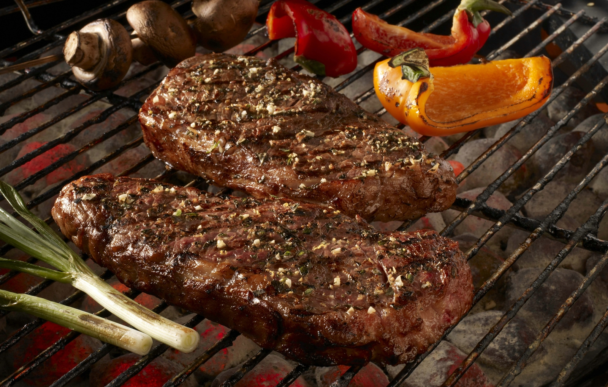

Carnicos |
||
|  |
La carne es el producto pecuario de mayor valor. Posee proteínas y aminoácidos, minerales, grasas y ácidos grasos, vitaminas y otros componentes bioactivos, así como pequeñas cantidades de carbohidratos. Desde el punto de vista nutricional, la importancia de la carne deriva de sus proteínas de alta calidad, que contienen todos los aminoácidos esenciales, así como de sus minerales y vitaminas de elevada biodisponibilidad. Mientras en el mundo desarrollado el consumo de carne no ha registrado importantes variaciones, el consumo anual per cápita de carne en los países en desarrollo se ha duplicado desde 1980. El crecimiento demográfico y el incremento de los ingresos, junto con los cambios en las preferencias alimentarias, han producido un aumento de la demanda de productos pecuarios. |
|
|
Según las proyecciones, la producción mundial de carne se habrá duplicado para el año 2050 y se prevé que la mayor parte del crecimiento se concentrará en los países en desarrollo. El creciente mercado de la carne representa una importante oportunidad para los productores pecuarios y los elaboradores de carne de estos países. No obstante, el incremento de la producción ganadera y la elaboración y comercialización inocuas de carne y productos cárnicos conformes a las normas higiénicas supone un serio desafío. El programa de la FAO sobre carne y productos cárnicos tiene como objetivo prestar asistencia a los países miembros a fin de que puedan aprovechar las oportunidades de desarrollo del sector pecuario y mitigación de la pobreza a través de la promoción de sistemas inocuos, eficaces y sostenibles de producción, elaboración y comercialización de carne y productos cárnicos. Las actividades se centran en el perfeccionamiento de las competencias y la creación de capacidad en el sector de la agricultura en pequeña escala mediante la mejora y desarrollo de la producción de carne y sus técnicas de elaboración. La FAO presta también asistencia en el ámbito de la comercialización y la mejora de la cadena de valor de la carne gracias a un conjunto de actividades in situ y sobre el terreno y a la colaboración con una serie de asociados de nivel nacional, regional e internacional. |
||